공개 Blob 값의 해석
| 필드 | 단위·의미 |
|---|---|
| Area | 전경 픽셀 수 |
| X, Y | ROI 지역 좌표의 경계 사각형 시작점 |
| Width, Height | 경계 사각형의 픽셀 크기 |
| CentroidX, CentroidY | 전경 픽셀 중심 평균 좌표 |
공개 Blob 값의 해석 · 핵심 동작
Blob 면적은 성분을 이루는 비영 픽셀 개수입니다. 중심은 전경 픽셀 중심 좌표를 각각 평균한 값이며, 외접 사각형은 그 성분을 모두 포함하는 가장 작은 축 정렬 경계입니다. 사각형 내부가 모두 전경이 아닐 수 있으므로 면적과 사각형 폭·높이의 곱은 서로 다른 값입니다.
그림으로 이해하기



공개 Blob 값의 해석 · 입력과 결과
예를 들어 3×3 테두리만 전경이라면 픽셀 면적은 8이고 외접 사각형의 크기는 3×3입니다. 가운데가 배경이어도 사각형 면적은 9입니다. 이 경우 구멍 유무까지 판정해야 한다면 단순 면적과 경계만으로 충분하지 않으므로 별도의 위상 측정을 검토해야 합니다.
공개 Blob 값의 해석 · 좌표와 소유권
결과 좌표의 기준은 사용한 영상 또는 ROI의 로컬 원점입니다. ROI가 부모의 (100,40)에서 시작하고 로컬 중심이 (1.5,2)라면 부모 기준 중심은 (101.5,42)입니다. 이미 전역 좌표로 환산한 값에 원점을 다시 더하지 않도록 데이터와 좌표계를 함께 보관하십시오.
공개 Blob 값의 해석 · 오류와 판단
픽셀 면적은 실물 면적이 아닙니다. 픽셀 크기나 보정 모델을 사용한 변환을 별도로 적용해야 하며, 단순 일정 배율이 투시 변화에 적절한지도 검사 조건에 따라 확인해야 합니다.
면적은 연결된 전경 픽셀의 수이고 중심은 그 픽셀 위치의 평균이다. 따라서 둘을 함께 확인하면 같은 크기라도 서로 다른 위치에 있는 성분을 구별할 수 있다.